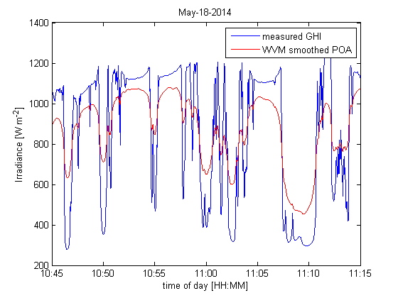

WVM example: Discrete Points
This example uses May 18th, 2014 irradiance data collected at Sandia National Laboratories in Livermore, CA to demonstrate use of the wavelet variability model (WVM).
Contents
load data
This file contains two vectors: "GHI" which is the GHI measurements, and "dt" which is the timestamps.
Livermore=load('./example_data/Livermore_Sample_GHI');
Also load the discrete points latitudes and longitudes.
Livermore_discrete=load('./example_data/Livermore_Sample_Discrete_Points.mat');
define variables
First, define the irradiance sensor variables.
irr_sensor.irr=Livermore.GHI; %measured irradiance irr_sensor.time=Livermore.dt; %timestamps irr_sensor.Lat=37.676208; %sensor latitude irr_sensor.Lon=-121.703118; %sensor longitude irr_sensor.alt=200; %sensor altitude (in meters) irr_sensor.tilt=0; %tilt = 0 for GHI sensor irr_sensor.azimuth=0; % azimuth = 0 for GHI sensor irr_sensor.UTCoffset=-8; %sensor UTC offset
Then define the PV plant details.
plantinfo.tilt=37; %assume modules tilted 37 degrees (approximately latitude tilt) plantinfo.azimuth=180; %assume modules facing south plantinfo.type='discrete'; %assume a square-shaped PV plant %We do not need to define plantinfo.MW or plantinfo.PVdensity for the 'discrete' case. plantinfo.Lat=Livermore_discrete.discretelats; plantinfo.Lon=Livermore_discrete.discretelons;
Finally, define the cloud speed.
cloud_speed=10; %assume cloud speed of 10 m/s
run WVM
[smooth_irradiance,other_outputs]=pvl_WVM(irr_sensor,plantinfo,cloud_speed);
plot the WVM results
Zoomed out plot comparing the measured GHI to the WVM output of smoothed POA irradiance.
plot(irr_sensor.time,irr_sensor.irr,'b',irr_sensor.time,smooth_irradiance,'r'); legend('measured GHI','WVM smoothed POA'); set(gca,'xtick',floor(nanmean(irr_sensor.time)):1/24:ceil(nanmean(irr_sensor.time))); datetick('x','HH','keepticks','keeplimits'); xlabel('time of day [HH]'); ylabel('Irradiance [W m^{-2}]'); axis tight title(datestr(nanmean(irr_sensor.time),'mmm-dd-yyyy'))
Zoomed in plot comparing the measured GHI to the WVM output of smoothed POA irradiance.
plot(irr_sensor.time,irr_sensor.irr,'b',irr_sensor.time,smooth_irradiance,'r'); legend('measured GHI','WVM smoothed POA'); set(gca,'xtick',floor(nanmean(irr_sensor.time)):1/(24*12):ceil(nanmean(irr_sensor.time))); datetick('x','HH:MM','keepticks','keeplimits'); xlabel('time of day [HH:MM]'); ylabel('Irradiance [W m^{-2}]'); xlim([floor(nanmean(irr_sensor.time))+10.75/24 floor(nanmean(irr_sensor.time))+11.25/24]) title(datestr(nanmean(irr_sensor.time),'mmm-dd-yyyy'))